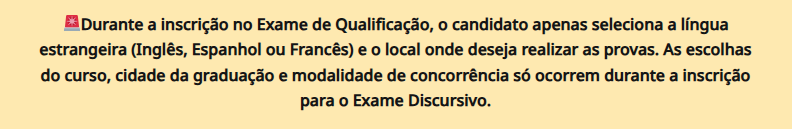

Tudo o que você precisa saber sobre o vestibular da Uerj
A universidade pioneira em inclusão social é uma dos mais concorridas do país. Confira as informações mais importantes sobre o processo seletivo, como formato das provas, conteúdos mais pedidos, obras obrigatórias, concorrência e calendário
A universidade pioneira em inclusão social é uma dos mais concorridas do país. Confira as informações mais importantes sobre o processo seletivo, como formato das provas, conteúdos mais pedidos, obras obrigatórias, concorrência e calendário

A Universidade do Estado do Rio de Janeiro (Uerj) é uma das melhores universidades do país, conhecida por sua forte atuação na pesquisa científica e tecnológica, com diversos grupos de pesquisa e laboratórios de ponta, o que possibilita a formação de profissionais altamente capacitados.
Segundo o Center for World University Rankings de 2022, estamos falando da 8ª melhor universidade brasileira. Além disso, ela é pioneira em inclusão social e racial. Foi a primeira universidade de todo o país a instituir política de cotas, em 2000 – 12 anos antes da Lei de Cotas nacional!
Até hoje, a Uerj é referência em políticas de inclusão: além da reserva de vagas, os estudantes têm acesso a programas como bolsa permanência, auxílio material didático, auxílio creche, auxílio alimentação, auxílio transporte e mais.
Anualmente, a Uerj oferece cerca de 6.500 vagas em 76 cursos distribuídos pela capital e as cidades de Duque de Caxias, São Gonçalo, Nova Friburgo, Petrópolis, Resende e Cabo Frio.
Como funciona o vestibular da Uerj?
Desde 2023, o vestibular da Uerj voltou a ser aplicado no modelo tradicional, com dois exames de qualificação e um exame discursivo. O Departamento de Seleção Acadêmica da UERJ (DSEA) informou que a mudança marca o retorno ao formato utilizado antes da pandemia da Covid-19.
Dessa maneira, o vestibular terá a seguinte configuração:
• Exame de Qualificação (EQ): provas que acontecem duas vezes por ano, sendo obrigatória a realização de pelo menos uma. São 60 questões objetivas, que abrangem as áreas de Linguagens, Matemática, Ciências da Natureza e Ciências Humanas.
• Exame Discursivo (ED):aplicado apenas uma vez ao ano aos aprovados no Exame de Qualificação. Nessa prova, o candidato deve fazer uma redação e duas provas específicas, de acordo com o curso escolhido na inscrição.
O Conteúdo Programático do Exame de Qualificação da Uerj 2025 já está disponível no site da Uerj, bem como as provas que vão constituir o exame discursivo e seus respectivos pesos, de acordo com o curso escolhido pelo candidato.
Como se inscrever no vestibular da Uerj?
As inscrições do vestibular da Uerj são realizadas exclusivamente online por meio do site do vestibular, em ambas as fases. Confira o passo a passo para realizar a inscrição:
1. Acesse o site do Vestibular Uerj (www.vestibular.uerj.br) e faça o login;
2. Caso não possua um cadastro na plataforma, é necessário cadastrar-se;
3. Após iniciar a sessão, clique no ícone de INSCRIÇÃO para começar o processo;
4. Preencha o requerimento de inscrição (informações pessoais e escolares);
5. Inclua os dados do questionário de informações socioculturais;
6. Confirme todas as informações fornecidas e finalize a inscrição;
7. Efetue o pagamento da taxa de inscrição dentro do prazo estabelecido;
8. Aguarde a confirmação da inscrição por e-mail e/ou pelo site da Uerj.
Qual o valor do vestibular da Uerj?
Tradicionalmente, a taxa de inscrição em cada Exame de Qualificação do Vestibular da Uerj é de R$ 90. Enquanto o valor da taxa de inscrição para o Exame Discursivo é de R$ 120.
Quanto à solicitação de isenção da taxa, ela pode ser concedida aos candidatos com renda familiar de até um salário mínimo e meio por pessoa e que estejam cursando o último ano do Ensino médio ou já tenham concluído esse nível de ensino.
É preciso se inscrever novamente para fazer o Exame Discursivo?
Sim. Todos os candidatos aprovados no Exame de Qualificação devem fazer a inscrição para o Exame Discursivo.
Em relação à isenção da taxa de inscrição, os candidatos que foram contemplados no Exame de Qualificação não precisam solicitar novamente no Exame de Qualificação, pois o processo é automático.
Como é a redação da Uerj?
Há alguns anos, a prova de redação da Uerj vem se caracterizando por propor um tema de reflexão mais filosófico, a partir da leitura de um livro listado no edital.
• O texto pedido é uma dissertação argumentativa, e há alguns requisitos obrigatórios que todos devem seguir em suas propostas:
• A redação transcrita deve ter, no mínimo, 20 e, no máximo, 30 linhas;
• O candidato NÃO deve fazer resumo, nem resenha do livro;
• O problema apresentado deve ser discutido como uma resposta à pergunta: Qual é o problema em torno desse tema? Por quê? Como? Quais as consequências? Há um solução?
Critérios de correção
Segundo o edital, a banca levará em consideração as seguintes competências para correção:
• Leitura e interpretação
Essa habilidade avalia a leitura do livro feita pelo candidato. Na redação, é possível verificar a boa interpretação das informações, do enredo, e a análise feita pelo aluno, quando direcionada pela pergunta motivadora da proposta.
Por isso, nem precisamos dizer que quem quer ir bem na redação precisa realmente ler o livro, e não só encontrar um resumo na internet, certo?
• Domínio do texto dissertativo
Aqui, a habilidade relacionada ao domínio do texto dissertativo-argumentativo vincula-se ao conhecimento de sua estrutura, baseada na defesa de uma tese por meio de argumentos racionalmente construídos e dividida em introdução, desenvolvimento e conclusão.